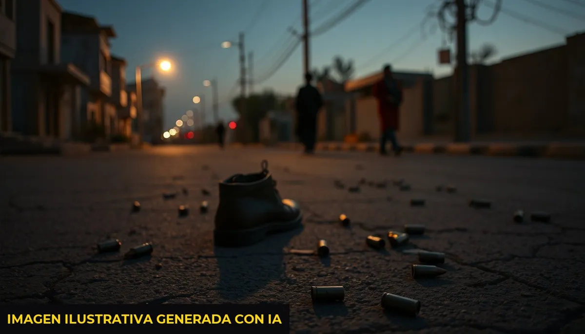

OKpolítico
OKpolíticoDos ataques armados en Sudáfrica dejan al menos 17 muertos

ACTUALIZADO · Doce personas fueron asesinadas en cuatro ataques simultáneos en el municipio de Yorito, Yoro, Honduras, durante la madrugada del 18 de noviembre de 2026, en una zona controlada por narcotraficantes.
Compartir por WhatsAppActualización 07:20 h
En la madrugada del miércoles 18 de noviembre, cuatro puntos de la zona montañosa del municipio de Yorito, en el departamento de Yoro, fueron blanco de ataques armados que dejaron al menos 12 víctimas mortales, según la Policía Nacional hondureña. Los crímenes se registraron en cuatro comunidades distintas y se cree que fueron ejecutados por miembros de una organización criminal, en una zona controlada por narcotraficantes.
El contexto de la violencia se remonta a la ofensiva del gobierno de Nasry Asfura, que inició en enero de 2026 y que incluye autorizaciones de allanamientos sin orden judicial, la utilización de tatuajes como prueba y la imposición de penas más severas a los delincuentes. Estas medidas, diseñadas para frenar el crimen organizado, han sido implementadas por el gobierno.
✉️ Recibe lo importante del día en tu correo. Suscríbete gratis →Nasry Asfura condenó los ataques en una publicación en X, afirmando que la masacre “no quedará impune” y que el gobierno continuará con sus operaciones contra el narcotráfico. La policía anunció la búsqueda de Esteban Ferrera, alias “El Diablo”, considerado líder de la organización. La muerte de las víctimas, entre ellas una funcionaria municipal, se interpreta como una represalia.
El gobierno hondureño ha declarado una medida de emergencia en Yoro y ha reforzado la presencia policial en la zona. En el ámbito internacional, la comunidad de la región ha expresado preocupación por la escalada de violencia y la posible inestabilidad que esto podría generar en la frontera con Guatemala.
El caso sigue en desarrollo, con la Policía Nacional y el Ministerio de Seguridad trabajando en la captura de los responsables y en la evaluación de la efectividad de las nuevas políticas de seguridad implementadas por el gobierno de Asfura. La comunidad internacional observa de cerca la evolución de la situación para determinar los próximos pasos en la lucha contra el crimen organizado en Centroamérica.
Actualización 06:18 h
Dos grupos de tiradores atacaron dos casas en Sudáfrica, dejando al menos 17 muertos.
Lusikisiki es una zona que ha registrado altos índices de criminalidad, incluyendo robos y violaciones. La violencia doméstica y la femicidio son problemas persistentes en la región, lo que ha aumentado la preocupación por la seguridad de las comunidades locales. El ataque ha puesto de relieve la necesidad de reforzar la presencia policial y los programas de prevención del delito.
La comunidad local y las autoridades están organizando un servicio conmemorativo para las víctimas, mientras que los líderes tradicionales y la sociedad civil exigen medidas más estrictas para prevenir la violencia de género y proteger a las familias en la región.
La investigación sigue en curso y se espera que los responsables enfrenten cargos por homicidio y otros delitos relacionados con el uso de armas de fuego. La policía continúa buscando a los demás sospechosos y a los posibles cómplices.
La violencia en Lusikisiki ha provocado un debate nacional sobre la seguridad pública y la necesidad de fortalecer la respuesta policial ante los crímenes de alta gravedad.
La comunidad internacional ha expresado su solidaridad con las víctimas y ha pedido a Sudáfrica que tome medidas para abordar la violencia de género y la inseguridad en las zonas rurales.
El caso ha generado una mayor atención en los medios locales y ha llevado a una revisión de las políticas de protección de las familias y la prevención de la violencia doméstica en la región.
La policía ha instado a la población a colaborar con la investigación y a denunciar cualquier actividad sospechosa que pueda estar relacionada con el ataque.
Actualización 12:34 h
El 27 de septiembre de 2024, a primeras horas de la madrugada, dos casas en la aldea Ngobozana, en el municipio de Lusikisiki, Eastern Cape, fueron blanco de un ataque con armas de fuego de alta potencia. 17 personas, la mayoría mujeres, fueron asesinadas en la cabeza y seis resultaron heridas. La Policía de Sudáfrica (SAPS) confirmó el número de víctimas y la ubicación exacta del incidente.
El motivo del ataque sigue siendo desconocido; no se han identificado motivos políticos ni sociales claros. La violencia en la región es frecuente, con altos índices de robo y agresión sexual, y el caso se produce en medio de una campaña de seguridad que busca frenar la creciente tasa de homicidios en el país.
El presidente Cyril Ramaphosa expresó su profunda condolencia a las familias y aseguró que la SAPS moviliza recursos máximos para capturar a los responsables. El ministro de Policía, Senzo Mchunu, y la alta dirección de la SAPS visitarán a los afectados y a la comunidad para ofrecer apoyo y recopilar información. La policía ha desplegado un equipo de detectives y expertos forenses para reconstruir la escena y localizar a los atacantes.
Hasta la fecha, la investigación sigue en curso y los sospechosos permanecen en libertad. Se espera que la SAPS continúe con la búsqueda y que, una vez identificados, se presenten cargos ante los tribunales. La comunidad local y los funcionarios han pedido una respuesta rápida y justicia para las víctimas.
Reacciones oficiales incluyen la declaración de Ramaphosa de que el país está “unido en la indignación” y que el ataque “no quedará impune”, mientras que la portavoz de la SAPS, Athlenda Mathe, afirmó que la fuerza policial tiene la experiencia necesaria para resolver el caso.
Actualización 09:41 h
El lunes, la policía sudafricana informó que 17 personas habían sido asesinadas en dos incidentes separados durante la noche del domingo. En la primera escena, ocho hombres fueron encontrados muertos dentro de un minibus en la zona rural de KwaZulu-Natal, cerca de Pietermaritzburg. En la segunda, nueve personas, seis hombres y tres mujeres, fueron halladas sin vida dentro de una choza en el asentamiento informal de Atteridgeville, al oeste de Pretoria.
Los dos ataques fueron declarados no relacionados por los oficiales que investigan el caso. El portavoz de la policía, Robert Netshiunda, indicó que todavía no se ha determinado el motivo de los tiroteos y que se están reuniendo pruebas para identificar a los sospechosos. La búsqueda de los responsables ya está en marcha, con la movilización de recursos de inteligencia y equipos de búsqueda en la provincia de Gauteng.
El contexto de la violencia armada en Sudáfrica es de larga data. El país registra alrededor de 60 homicidios diarios, con un fuerte vínculo entre el crimen organizado, el tráfico de drogas y la minería ilegal. En enero de 2026, la policía ya había registrado 5 427 asesinatos entre abril y junio, lo que representa una caída del 6 % respecto al año anterior, aunque el problema persiste.
El presidente Cyril Ramaphosa ha calificado el crimen organizado como la mayor amenaza para la democracia y la economía del país. En respuesta a la ola de violencia, el gobierno desplegó militares junto a la policía en cinco provincias con las tasas de homicidio más altas, incluida Gauteng. La comunidad local y las autoridades continúan pidiendo una mayor presencia policial y medidas de prevención para frenar la escalada de la violencia.
La investigación sigue en curso y las autoridades prometen mantener informada a la población sobre cualquier avance en la identificación de los perpetradores y la motivación de los ataques.
Actualización 09:13 h
Dos grupos de atacantes dispararon en la madrugada sobre dos hogares. Al menos 17 personas fueron asesinadas en los dos incidentes.
El motivo de los ataques sigue sin esclarecerse y la investigación se mantiene en curso.
La investigación continúa.
Actualización 07:59 h
En la madrugada del domingo 27 de junio, la policía de Sudáfrica confirmó que ocho hombres fueron abatidos en un minibus en la zona de Pietermaritzburg, provincia de KwaZulu-Natal. La misma noche, nueve personas fueron halladas muertas dentro de una choza improvisada en el asentamiento informal de Jeffsville, al oeste de Pretoria, en la provincia de Gauteng. Los dos incidentes son considerados independientes y el motivo aún no se ha determinado.
El contexto de estos hechos se enmarca en la alarmante tasa de homicidios del país, que ronda los 60 al día, y en la presencia de bandas criminales que compiten por territorios de tráfico de drogas y minería ilegal. En enero de 2026, por ejemplo, cinco hombres fueron asesinados en un ataque a un local comercial, y en septiembre se registraron 28 víctimas en dos eventos distintos. El presidente Cyril Ramaphosa ha señalado que el crimen organizado constituye la mayor amenaza para la democracia y la economía del país.
Las autoridades locales han iniciado una búsqueda activa de los sospechosos. El portavoz de la policía provincial de Gauteng, Brigadier Brenda Muridili, anunció la movilización de recursos de inteligencia y equipos de rastreo para localizar a los responsables. En KwaZulu-Natal, el portavoz Robert Netshiunda informó que se están recopilando pruebas y se espera establecer el posible motivo de los ataques.
Las reacciones oficiales han sido de consternación y compromiso. El presidente Ramaphosa ha reiterado su llamado a reforzar la seguridad y a combatir la violencia armada, mientras que el gobierno ha desplegado el ejército junto a la policía en las provincias con mayor índice de homicidios para frenar la escalada de la violencia.
El caso sigue bajo investigación y la policía continúa trabajando para esclarecer las causas y capturar a los perpetradores, en un contexto donde la violencia armada sigue siendo un desafío crítico para la estabilidad social y la gobernabilidad del país.
Este lunes, la policía sudafricana informó que la noche del domingo se registraron dos tiroteos que resultaron en la muerte de 17 personas. En la zona de Pietermaritzburg, en la provincia de KwaZulu-Natal, ocho hombres fueron hallados con heridas de bala dentro de un vehículo que presentaba múltiples impactos. Más tarde, en el asentamiento de Jeffsville, al oeste de Pretoria, nueve personas —seis hombres y tres mujeres— fueron encontradas muertas dentro de una vivienda improvisada.
Las autoridades consideran los incidentes como hechos independientes y el motivo de los ataques aún no se ha determinado. Agentes policiales recolectan pruebas y mantienen una búsqueda activa de los responsables. La portavoz de la policía de Gauteng, la brigadier Brenda Muridili, anunció que se han movilizado recursos de inteligencia y equipos especiales para localizar a los sospechosos.
El contexto de la violencia armada en Sudáfrica es de larga data. El país registra alrededor de 60 homicidios diarios, con una alta incidencia de crímenes vinculados a bandas del narcotráfico y minería ilegal. En enero de 2026, la policía ya había registrado varios tiroteos masivos en la región, y el presidente Cyril Ramaphosa ha calificado el crimen organizado como la mayor amenaza para la democracia y el desarrollo económico del país. En respuesta, el gobierno ha desplegado militares junto a la policía en las provincias con mayores índices de violencia.
Las autoridades expresaron su preocupación por la gravedad de los hechos. El portavoz de la policía de KwaZulu-Natal, Robert Netshiunda, y la brigadier Muridili, de Gauteng, pidieron a la ciudadanía colaborar con la investigación y aseguraron que se toman las medidas necesarias para garantizar la seguridad pública. El presidente Ramaphosa, por su parte, reiteró la necesidad de combatir la delincuencia organizada y prometió intensificar los esfuerzos para reducir la violencia armada.
La investigación sigue en curso y la policía continúa con el rastreo de los responsables. Se espera que las autoridades presenten cargos en cuanto se disponga de pruebas suficientes, por lo que se mantendrá informada a la población sobre los avances del caso.
Actualizado 07:21 h (centro de México). Información en desarrollo; OKpolítico ampliará esta nota con datos verificados y el video explicativo.
Actualización 21:21 h
El fin de semana se registraron 11 hechos violentos en el municipio de Mazatlán, Sinaloa. Los ataques comenzaron a la mañana del sábado 14 y se extendieron hasta la madrugada del domingo 15, afectando colonias habitacionales, comunidades rurales y la zona turística de la Zona Dorada. En total, siete personas fueron asesinadas y nueve resultaron heridas, según el recuento preliminar de la Fiscalía estatal.
Los incidentes incluyeron disparos contra vehículos y viviendas, el lanzamiento de un artefacto explosivo contra un automóvil, y un ataque con arma de fuego dentro del bar La Malinche en la avenida Camarón Sábalo. En la zona de la Zona Dorada, un hombre murió en el acceso del bar y otro resultó herido. Otros ataques se dieron en la colonia 12 de Mayo, donde un grupo de personas en una fiesta fue atacado a balazos, y en la colonia Pueblo Nuevo, donde un hombre murió durante un disparo en una celebración. Además, se registraron homicidios en colonias como Luis Echeverría, Azteca, Buenavista y Los Olivos.
El contexto de la violencia se vincula a la presencia de grupos criminales que compiten por el control de rutas de tráfico de drogas y de la zona turística de Mazatlán. En los últimos meses, la Secretaría de Seguridad Pública de Sinaloa ha señalado que la zona ha sido escenario de enfrentamientos entre bandas rivales, lo que ha generado un clima de inseguridad que se intensifica en los días previos a las elecciones municipales programadas para el 20 de noviembre. La competencia por el apoyo de la población y la influencia en la economía local han sido factores que alimentan la violencia.
La respuesta oficial incluyó el despliegue de la Guardia Nacional, la Secretaría de Marina y policías municipales en los puntos críticos. La Fiscalía estatal inició las diligencias en cada lugar de los ataques, aunque hasta el momento no se han identificado detenidos ni se ha establecido un móvil común entre los hechos. La Secretaría de Seguridad Pública desmintió rumores de un supuesto retiro de las Fuerzas Armadas de Mazatlán, asegurando que la presencia federal continuará hasta que se restablezcan las condiciones de paz y seguridad. Los responsables de la seguridad local y federal han prometido intensificar las operaciones de patrulla y coordinación con la Fiscalía para esclarecer los incidentes y prevenir futuros ataques.
Las autoridades han pedido a la ciudadanía que evite las zonas afectadas y que denuncie cualquier actividad sospechosa. Se espera que la Fiscalía continúe con las investigaciones y que las autoridades federales y estatales mantengan la presencia militar y policial en la zona hasta que se logre un ambiente seguro para los residentes y los turistas.
Sigue viendo
- 📺 Detienen a Lili Campos: el esquema de 62 mdp en lavado fantasma
- 📺 La matanza de Aguas Blancas: el expediente de 1995
- 📺 DEA acusa nexos políticos-cárteles: ¿cooperación o injerencia?
- 📰 Muere Peter Hernandez, padre de Bruno Mars, a los 74 años
- 📰 Morena definirá el miércoles estrategia para renovar presidencia del INE ante falta de acuerdos
- 📰 Petro advierte sobre golpe de Estado en Colombia tras denuncias de senadores de oposición
Con información de
El Debate · Notimérica · Demócrata · EntreMedios · Europa Press · gamavision.com · Vietnam.vn · elconurbano.com.ar · AP News · BBC News · Independent en Español · Infobae · Seattle Post-Intelligencer · Canal 9 Bío Bío Televisión · El Reporte Diario · infobae.com · revistaespejo.com · luznoticias.mx · La Silla Rota · Cadena 3 Argentina · La Jornada · CNN · Presidencia de Sudáfrica · La Unión de Morelos · Machala Móvil · The Edwardsville Intelligencer · TV Azteca Baja California · Infobae América · noticentro.com.do · Diario Ahora · DW